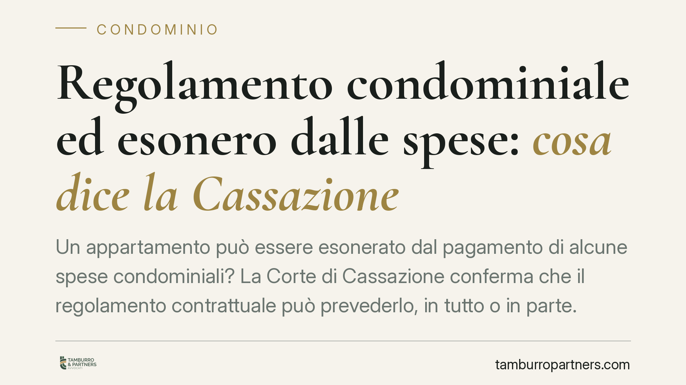

Regolamento condominiale ed esonero dalle spese: cosa dice la Cassazione
Un appartamento può essere esonerato dal pagamento di alcune spese condominiali? La Corte di Cassazione conferma che il regolamento contrattuale può prevederlo, in tutto o in parte. Ma serve una condizione precisa per far valere l'esonero contro i futuri acquirenti. E c'è un limite invalicabile: nessuna clausola può estromettere un'unità dal condominio.

Il caso e il principio
La questione ricorre spesso: un singolo appartamento risulta esonerato da alcune spese condominiali. A volte l'esonero riguarda l'ascensore, altre volte il portone o le aree comuni non fruite. Ci si chiede se una simile previsione sia valida e, soprattutto, se resti efficace quando l'immobile cambia proprietario.
La Corte di Cassazione ha fissato due punti chiave. Il primo: il regolamento condominiale di natura contrattuale può legittimamente esonerare un'unità dal contributo alle spese, in misura totale o parziale. Il secondo: nessuna clausola può escludere un appartamento dal condominio stesso. Una previsione di questo tipo è nulla, cioè priva di effetti fin dall'origine.
Inquadramento normativo
Il criterio ordinario di riparto è dettato dall'art. 1123 cod. civ.: le spese si dividono in proporzione al valore delle singole proprietà, salvo diversa convenzione. Proprio quell'inciso apre allo spazio per una deroga pattizia, che deve però avere fonte contrattuale, non deliberativa.
Qui sta la distinzione decisiva. Un conto è il regolamento assembleare, adottato a maggioranza ai sensi dell'art. 1138 cod. civ.: non può incidere sui criteri di ripartizione né sui diritti dei singoli. Altro è il regolamento contrattuale, cioè accettato da tutti i condòmini con atto negoziale (tipicamente predisposto dal costruttore e richiamato nei rogiti). Solo quest'ultimo può introdurre esoneri e deroghe al riparto.
Resta fermo il perimetro dell'art. 1118 cod. civ.: il diritto di ciascun condòmino sulle parti comuni è connaturato alla proprietà dell'unità e non se ne può disporre in modo da negarlo del tutto. Da qui la nullità di ogni clausola che pretenda di "far uscire" un appartamento dal condominio.
Opponibilità: il vero snodo pratico
Una clausola di esonero valida tra i condòmini originari non è automaticamente efficace verso chi acquista in seguito. Perché l'esonero sia opponibile ai futuri acquirenti occorre una di queste condizioni:
- la clausola è trascritta nei registri immobiliari;
- oppure è richiamata e accettata negli atti di acquisto (i rogiti).
In assenza di trascrizione o di espresso richiamo nel titolo, il nuovo proprietario può non essere vincolato dall'esonero. Il rischio è concreto: chi confidava di non pagare determinate spese può trovarsi obbligato a contribuire, oppure chi acquista scopre di dover sostenere costi che riteneva a carico di altri.
Implicazioni pratiche
Per il condòmino esonerato, la protezione dipende dalla forma. Un esonero "di fatto", mai formalizzato in modo opponibile, è fragile e può essere contestato in occasione di un passaggio di proprietà.
Per l'acquirente, la verifica va fatta prima del rogito. Una clausola di esonero altrui non richiamata nel proprio titolo può significare spese aggiuntive impreviste. Al contrario, una clausola a proprio favore non trascritta rischia di svanire.
Per l'amministratore, il tema si traduce in corretta applicazione dei riparti: prima di escludere un'unità da una voce di spesa occorre riscontrare la fonte contrattuale dell'esonero e la sua efficacia verso l'attuale proprietario.
Infine, va ribadito che l'esonero riguarda solo la contribuzione. Non tocca la qualità di condòmino, che permane, con i relativi diritti sulle parti comuni.
Cosa fare in concreto
- Verificate la natura del regolamento: solo quello contrattuale, accettato da tutti, può prevedere esoneri dal riparto.
- Prima di acquistare, controllate se eventuali clausole di esonero siano trascritte o richiamate nel rogito, vostro e delle altre unità interessate.
- Se beneficiate di un esonero, assicuratevi che sia formalizzato in modo opponibile; diversamente valutate la regolarizzazione con atto idoneo.
- Diffidate di clausole che parlino di "esclusione dal condominio": sono nulle e non producono alcun effetto.
- In caso di contestazione sui riparti, richiedete all'amministratore il titolo su cui si fonda l'esonero applicato.
Consigliamo di far esaminare regolamento e atti di provenienza da un professionista prima di ogni compravendita che coinvolga unità con riparti derogati.
Disclaimer
Contributo informativo a cura di Tamburro & Partners - Avv. Giuseppe Tamburro. Non costituisce parere legale.
Ogni condominio ha una storia a sé.
Se gestisci un'amministrazione e vuoi un confronto su una specifica questione condominiale, scrivi allo studio. Ti rispondiamo entro un giorno lavorativo.